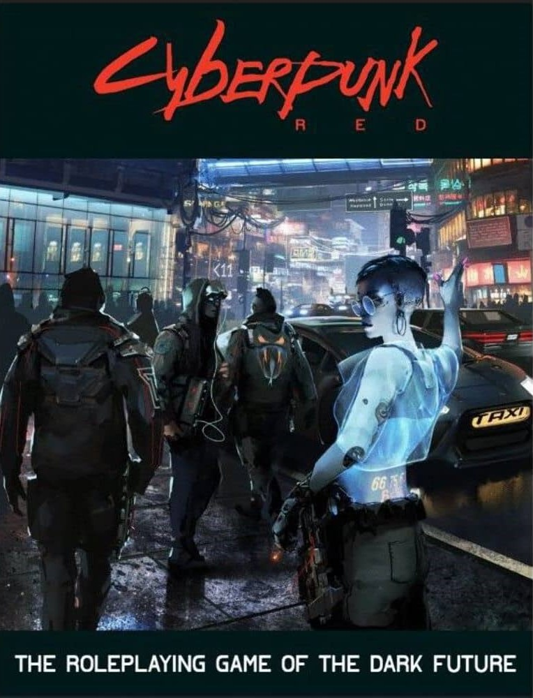
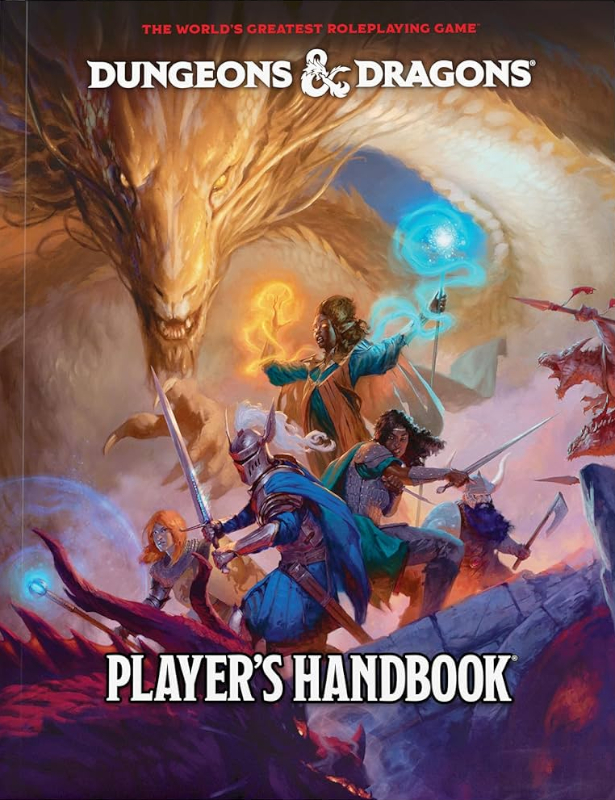
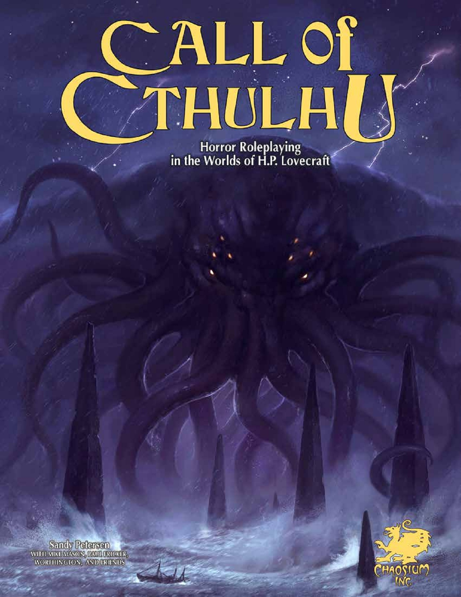

RPGs Eletrônicos
Os RPGs eletrônicos surgiram como uma simulação de uma Mesa de RPG
Inspirados pela liberdade que o RPG clássico proporcionava, os jogos eletrônicos
sempre buscaram representar todo o mundo imaginário nas telas dos computadores.
Jogos de RPG mais Influentes
Conheça três jogos populares com diferentes estilos:

- The Witcher III
- Medieval, Mitologia, História.
- RPG de Ação com foco em combate.

- Baldur's Gate III
- Fantasia medieval, Magia, Criaturas Místicas.
- RPG de Turnos com foco em estratégia.

- Final Fantasy VII
- Retrofuturismo, Steampunk, Magia.
- RPG de Turnos Japonês com foco em estratégia.
Diferença entre RPGs Ocidentais e Orientais
Crie um personagem e viva aventuras com outros jogadores guiados por um mestre de jogo.
Use sua imaginação para descrever ações e deixe os dados decidirem o destino!

Gerador de Dados
Use nosso gerador de dados virtual para suas campanhas!